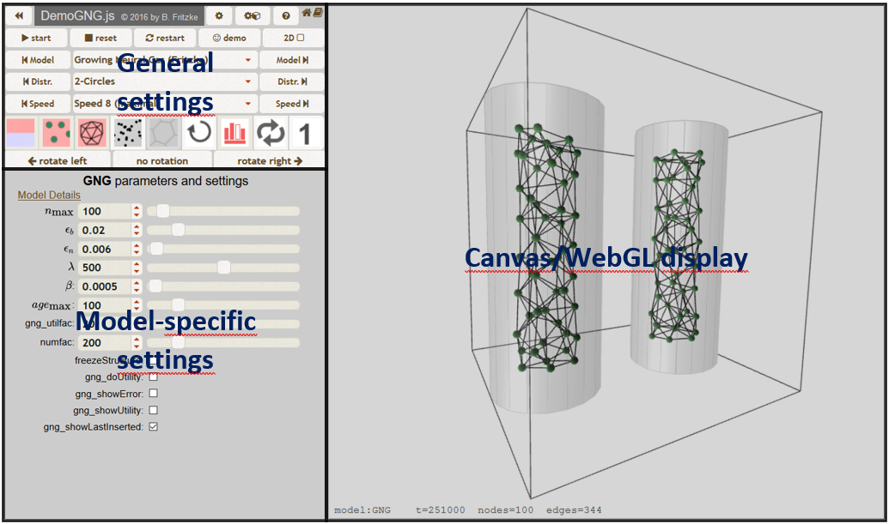
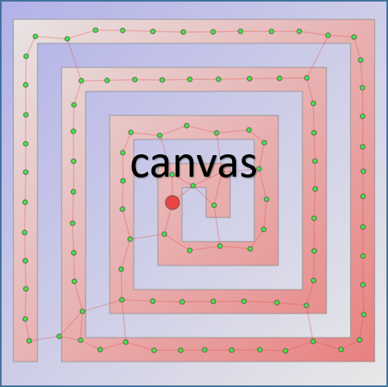

In "Desktop" mode the screen looks like this:
The "canvas" is displayed at the right. It shows the signal distribution and the current state of the network.
On the left upper side general parameters can be set (model, signal distribution, simulation speed etc.). The simulation can be started, stopped and reset. Several display options (e.g. signal distribution, nodes, edges, input signals, Voronoi diagram, faces, statistics) can be witched on and off.
One of three special modes can be activated:
On the lower left parameters specific to the chosen model can be set.
In "Mobile" mode only the canvas is shown. Some parameters can be set via the mouse or keyboard or via touch actions (see below).
